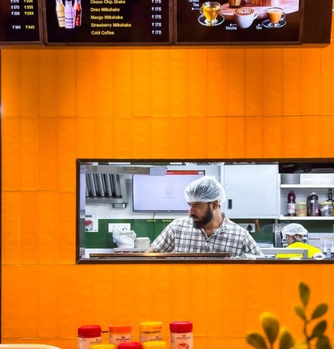
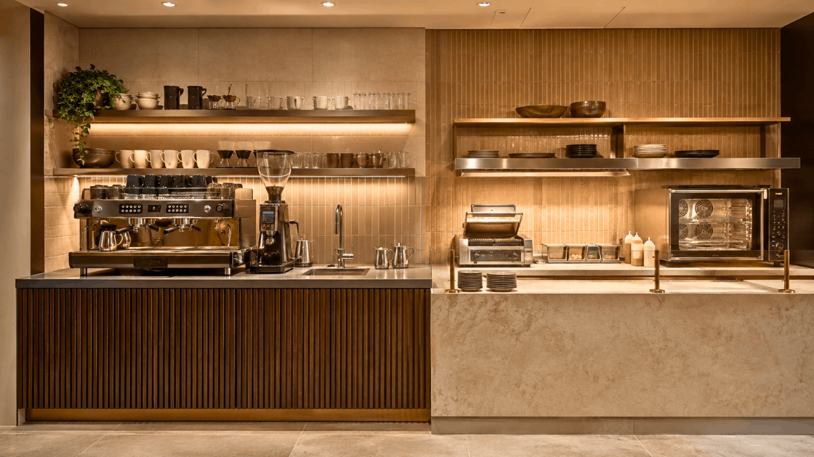
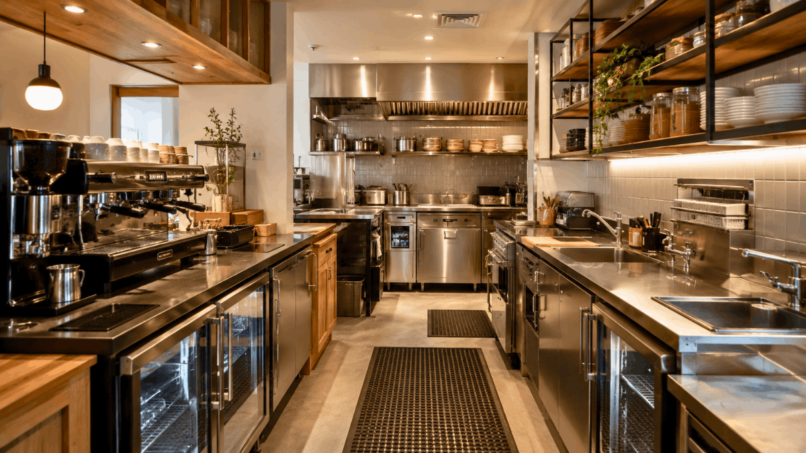
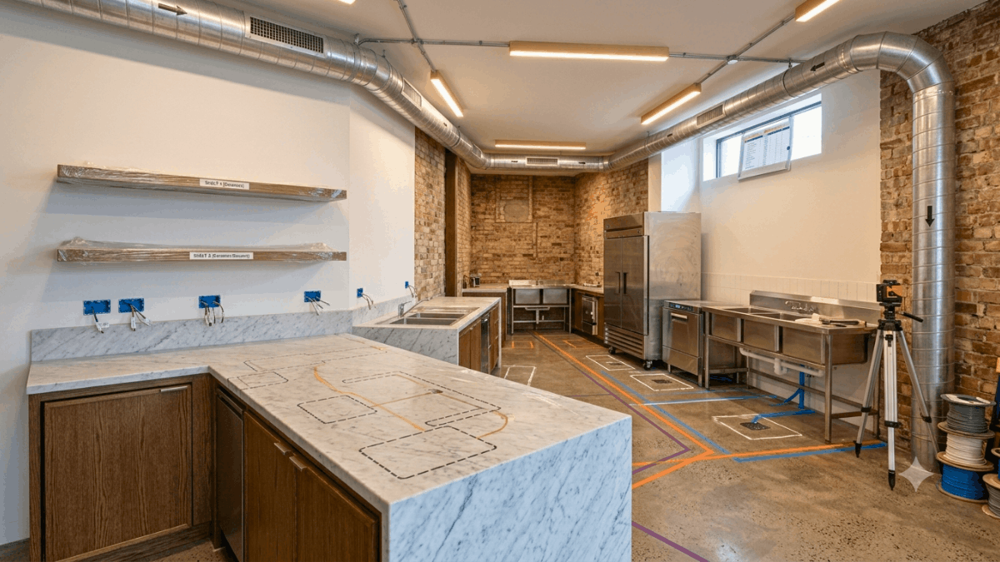
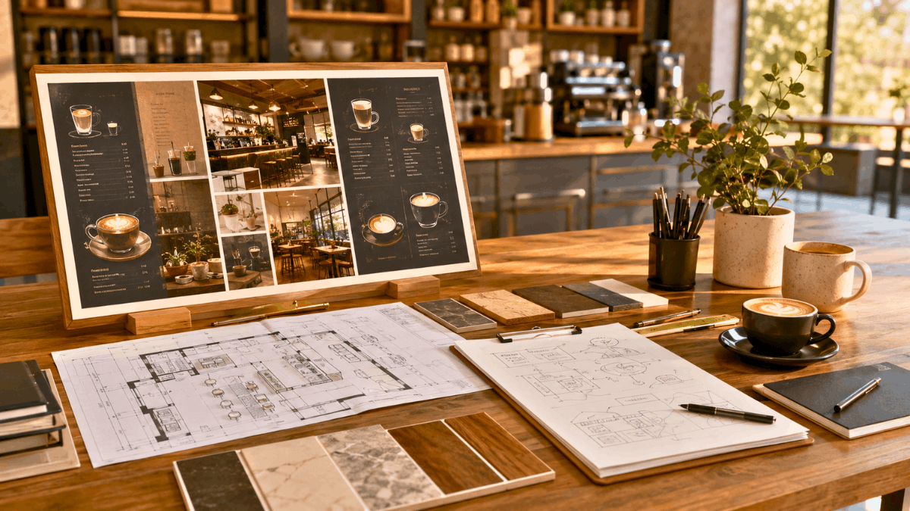

The kitchen behind a coffee shop is easy to underestimate. It’s compact, it’s often hidden from guests, and compared to a full restaurant kitchen, it can seem straightforward to plan. In practice, a poorly designed coffee shop kitchen causes more daily operational pain than almost any other design decision because, unlike a restaurant kitchen that operates in defined service windows, a coffee shop kitchen runs continuously from open to close, with little margin for the inefficiencies that a bad layout produces.
At SprintCo, we plan coffee shop kitchens with the same rigour we bring to full commercial kitchen design. The scale is smaller. The consequences of getting it wrong are just as significant.
Here is everything you need to think through before you build.

Define Your Menu Before You Design Anything
This sounds obvious. It is consistently ignored. Coffee shop owners frequently begin the fit-out process with a general sense of their offering: coffee, some pastries, maybe toasties, and finalise the menu details after the kitchen is already designed and built. By then, the equipment is specified, the power and gas points are fixed, and the ventilation is in place. Changing any of it is expensive.
Your menu determines your equipment list. Your equipment list determines your spatial requirements, your power load, your ventilation needs, and your plumbing points. None of these can be properly designed without a settled menu.
Before you brief a designer, know whether you are serving hot food that requires cooking or food that only requires heating. Know whether you are baking on-site or receiving baked goods from a supplier. Know whether your food offering is likely to grow within the first two years. Design for where you are heading, not just where you are starting.

The Equipment You Actually Need
Coffee shop kitchen equipment falls into two categories: the non-negotiables that every operation requires, and the additions that depend on your specific menu.
Non-Negotiables
Espresso machine and grinder. The centrepiece of the whole operation. For most independent coffee shops, a two-group espresso machine covers the throughput requirements comfortably. Higher-volume operations or those with multiple service points may need a three-group machine or additional equipment. The grinder is as important as the machine. Specify a commercial-grade grinder matched to your machine’s output, and factor in a separate grinder if you offer decaf or alternative single origins.
Commercial refrigeration. Under-counter refrigeration immediately behind the bar for daily milk requirements, and a separate upright or reach-in for food storage. Specify more cold storage than you think you need. Running out of refrigeration space is a daily operational problem that cannot be solved without significant disruption once the fit-out is complete.
Three-compartment sink and handwashing sink. Required by health codes in virtually every jurisdiction. The three-compartment sink handles washing, rinsing, and sanitising. The handwashing sink must be separate, dedicated, and positioned accessibly for all staff working in the kitchen.
Commercial dishwasher. An undercounter glasswasher or small commercial dishwasher is essential for any coffee shop operating with reusable cups and crockery. The positioning of this unit relative to the dirty-cup return point and the clean-cup storage is a workflow detail worth planning carefully.
Water filtration system. Non-negotiable for coffee quality. Hard or chemically treated water directly impairs espresso extraction and the taste of every drink you serve. A properly specified filtration system, matched to your water supply and your equipment’s requirements, is one of the highest-return investments in the fit-out.
Menu-Dependent Equipment
Convection oven. If you are heating food, toasties, pastries, or pies, a compact commercial convection oven is the workhorse piece. For on-site baking, a full-size convection oven with multiple rack positions is required. Size this to your projected output, not your projected menu. A one-tray oven is a bottleneck from day one in any operation doing meaningful food volume.
Sandwich press or panini grill. For coffee shops with a toasted food offering, a commercial-grade press is essential. Domestic units burn out quickly under continuous use and are a false economy.
Blender. If your menu includes smoothies, frappes, or blended drinks, specify a commercial blender rated for continuous use. A standard domestic blender will fail within weeks in a coffee shop environment.
Hot food holding equipment. If you are holding pre-cooked food for service: soup, baked goods, savouries, a heated display cabinet or holding unit maintains food at safe service temperatures without drying it out.

Layout: The Principles That Matter Most
Keep the Brew Bar and Kitchen Separate but Connected
In many coffee shops, the espresso bar and a small food preparation or heating kitchen are designed as a single continuous workspace. This works when the two functions are clearly separated into distinct zones within the counter and fails when they bleed into each other.
The espresso workflow requires clean, dry surfaces and immediate access to milk refrigeration, the grinder, and the machine. Food preparation, even just heating and plating, generates crumbs, steam, and mess. When these two zones share surface space without clear delineation, coffee quality suffers, and the workspace becomes chaotic during busy periods.
Plan your counter with a physical break between the coffee station and the food station. Even a small gap, a change in surface material, or a dedicated pass-through shelf creates the separation that keeps both functions running cleanly.
The Golden Triangle
The principle of the kitchen triangle, organising the three most-used points in a kitchen (in a coffee shop context: the espresso machine, the refrigeration, and the sink) into a tight triangle that minimises travel distance, applies directly to coffee shop design. A barista who has to walk two metres to reach the milk, two metres back to the machine, and another metre to the handwashing sink between tasks is slower and more fatigued than one who can access all three within a step or two.
Map your equipment positions against this principle before finalising your counter layout. The best coffee shop workflows are astonishingly compact, everything within reach, nothing requiring unnecessary movement.
Back of House Flow
The movement of stock from delivery to storage to service should follow a logical, uninterrupted path. Deliveries arrive, product is checked and stored, ingredients move from storage to the kitchen as needed, and finished products move to the counter. When this flow crosses itself when staff have to carry stock through the service area, or when the rubbish bin is on the wrong side of the kitchen, the friction accumulates across every shift.
Position your dry storage as close to your delivery entry point as possible. Position your cold storage based on which ingredients need to be accessed most frequently during service. Position waste and recycling where staff can reach them without crossing the customer-facing counter.

Services and Infrastructure: Get These Right First
Kitchen services: power, gas, water, drainage, and ventilation are the elements of a coffee shop fit-out that are most expensive to change after the fact. They need to be planned before the fit-out begins, not retrofitted to a completed layout.
Power. Commercial espresso machines, ovens, dishwashers, and refrigeration units have significant electrical loads. Your electrical plan needs to accommodate peak simultaneous demand across all equipment, with dedicated circuits for high-draw appliances. Under-specifying your electrical infrastructure is one of the most common and most costly fit-out mistakes in coffee shop design.
Gas. If your oven or any cooking equipment is gas-powered, gas points need to be positioned before the counter is built. Repositioning gas points after fit-out is disruptive and expensive.
Plumbing and drainage. Sinks, the espresso machine (which requires a direct water feed and drain in most commercial configurations), and the dishwasher all need plumbing connections. Floor drainage in the kitchen area is strongly recommended; it makes cleaning significantly faster and protects your flooring from water damage during the inevitably frequent spills of a working kitchen.
Ventilation. If you are cooking or heating food on-site, ventilation is a non-negotiable. A commercial exhaust hood sized for your equipment, with appropriate make-up air supply, keeps the kitchen comfortable for staff and prevents grease and moisture from migrating into the guest-facing areas of the cafe. Even coffee shops with no cooking equipment benefit from good general ventilation, the heat generated by espresso machines and refrigeration units in a compact space is substantial.
What to Plan Before You Build
Rather than arriving at the design process with questions, arrive with answers to these:
Your confirmed menu and service style. Sit-down with reusable crockery, takeaway-first, or both? Full food menu or coffee and pastries only? Each has different kitchen and counter implications.
Your projected volume. How many covers per hour at peak? This determines equipment capacity, counter length, and staffing configuration, all of which shape spatial requirements.
Your team size. How many staff will work in the kitchen and behind the bar simultaneously at peak? Two people working in a space designed for one is a safety issue and a service bottleneck.
Your delivery logistics. Where does stock arrive, and how does it reach storage? If your only entry point is through the front door past the espresso bar, your layout needs to account for this.
Your growth expectations. Are you planning to add a food offering, a second machine, or a second service point within two years? Design the infrastructure to support where you are going. Adding a gas point or a drainage channel after the counter is built is a project in itself.
Inside SprintCo’s Design Thinking
A coffee shop kitchen is a precision instrument. The difference between a layout that runs smoothly through a four-hundred-cover Saturday and one that buckles under the pressure is seldom the quality of the equipment; it is the quality of the planning that went into positioning it.
SprintCo brings full commercial kitchen design rigour to coffee shop projects of every scale. We specify equipment, design workflow, coordinate services, and integrate the back-of-house with the guest-facing cafe environment so the whole operation functions as a single, coherent system.
Planning a coffee shop fit-out? Talk to SprintCo before the build begins; it’s significantly cheaper than talking to us after.
SprintCo Restaurant & Hospitality Design | Designing spaces that perform as well as they look.
Pan-India presence | 3500+ F&B spaces delivered — Visit SprintCo’s Website